library("fImport")## Loading required package: timeDate## Loading required package: timeSerieslibrary(RQuantLib)## Sufficient QuantLib version with insufficient configuration.## Try configuring your build with the --enable-intraday argument.##
## Attaching package: 'RQuantLib'## The following objects are masked from 'package:timeDate':
##
## isHoliday, isWeekendlibrary(nlstools)##
## 'nlstools' has been loaded.## IMPORTANT NOTICE: Most nonlinear regression models and data set examples## related to predictive microbiolgy have been moved to the package 'nlsMicrobio'library(tseries)## Registered S3 method overwritten by 'quantmod':
## method from
## as.zoo.data.frame zoo##
## 'tseries' version: 0.10-47
##
## 'tseries' is a package for time series analysis and
## computational finance.
##
## See 'library(help="tseries")' for details.library(Quandl)## Loading required package: xts## Loading required package: zoo##
## Attaching package: 'zoo'## The following object is masked from 'package:timeSeries':
##
## time<-## The following objects are masked from 'package:base':
##
## as.Date, as.Date.numericlibrary(zoo)
library(PerformanceAnalytics)##
## Attaching package: 'PerformanceAnalytics'## The following objects are masked from 'package:timeDate':
##
## kurtosis, skewness## The following object is masked from 'package:graphics':
##
## legendlibrary(quantmod)## Loading required package: TTR## Version 0.4-0 included new data defaults. See ?getSymbols.library(FinTS)
library(forecast)## This is forecast 8.12
## Crossvalidated is a great place to get help on forecasting issues:
## http://stats.stackexchange.com/tags/forecasting.##
## Attaching package: 'forecast'## The following object is masked from 'package:FinTS':
##
## Acfrequire(stats)
#library(stockPortfolio)
library(vars)## Loading required package: MASS## Loading required package: strucchange## Loading required package: sandwich## Loading required package: urca## Loading required package: lmtestlibrary(tseries, quietly = T)
library(forecast, quietly = T)
library(fBasics)##
## Attaching package: 'fBasics'## The following object is masked from 'package:TTR':
##
## volatilitylibrary(timsac)
library(TTR)
library(lattice)
library(foreign)
library(MASS)
require(stats4)## Loading required package: stats4library(KernSmooth)## KernSmooth 2.23 loaded
## Copyright M. P. Wand 1997-2009library(fastICA)
library(cluster)
library(leaps)
library(mgcv)## Loading required package: nlme##
## Attaching package: 'nlme'## The following object is masked from 'package:forecast':
##
## getResponse## This is mgcv 1.8-31. For overview type 'help("mgcv-package")'.library(rpart)
require("datasets")
require(graphics)
library(RColorBrewer)
library(lattice)
library(foreign)
library(KernSmooth)
library(mgcv)
library(DAAG)##
## Attaching package: 'DAAG'## The following object is masked from 'package:MASS':
##
## hillslibrary("TTR")
library(tis)##
## Attaching package: 'tis'## The following object is masked from 'package:mgcv':
##
## ti## The following object is masked from 'package:forecast':
##
## easter## The following object is masked from 'package:quantmod':
##
## Lag## The following object is masked from 'package:TTR':
##
## lags## The following objects are masked from 'package:RQuantLib':
##
## isBusinessDay, isHoliday## The following objects are masked from 'package:timeSeries':
##
## description, interpNA## The following objects are masked from 'package:timeDate':
##
## dayOfWeek, dayOfYear, isHolidaylibrary("forecast")
require(astsa)## Loading required package: astsa##
## Attaching package: 'astsa'## The following object is masked from 'package:fBasics':
##
## nyse## The following object is masked from 'package:forecast':
##
## gaslibrary(seasonal)##
## Attaching package: 'seasonal'## The following object is masked from 'package:astsa':
##
## unemp## The following objects are masked from 'package:timeSeries':
##
## outlier, serieslibrary(fpp2)## Loading required package: ggplot2## Loading required package: fma##
## Attaching package: 'fma'## The following objects are masked from 'package:astsa':
##
## chicken, sales## The following objects are masked from 'package:DAAG':
##
## milk, ozone## The following objects are masked from 'package:MASS':
##
## cement, housing, petrol## Loading required package: expsmooth##
## Attaching package: 'fpp2'## The following object is masked from 'package:astsa':
##
## oillibrary(ggplot2)
library(fma)
library(seasonal)Modelling and forecasting stock price is a popular and key issue for investors as well as researchers in the financial markets. In this project, our selected data is AAPL monthly adjsuted close prices from 2015 Janurary to 2019 December, which consists of 5-year stock data from Apple Inc.. We choose this stock mainly because we are interesting in AAPL stock performance and would like to fit a model and forecast AAPL monthly adjsuted close prices. Our data is in the form of historical stock prices. In this project, for the first part, we will conduct research and find a fit model and use this model to forecast the monthly AAPL adjusted close prices 25-steps ahead. In the second part, we will construct a model with a full set of seasonal dunmmies. Then, we will add some trends to improve the seasonal model. We will use this final model to forecast AAPL monthly adjusted close price for next 25 steps (months).
First, we show a time-series plot of your data.
#get the monthly data we need
getSymbols("AAPL", from = "2015-01-01", to = "2019-12-31",
periodicity = "monthly", curl.options = list())## 'getSymbols' currently uses auto.assign=TRUE by default, but will
## use auto.assign=FALSE in 0.5-0. You will still be able to use
## 'loadSymbols' to automatically load data. getOption("getSymbols.env")
## and getOption("getSymbols.auto.assign") will still be checked for
## alternate defaults.
##
## This message is shown once per session and may be disabled by setting
## options("getSymbols.warning4.0"=FALSE). See ?getSymbols for details.## [1] "AAPL"#create a time series object
adj.close <- ts(AAPL$AAPL.Adjusted, start = 2015, frequency = 12)
#plot the time-series plot
plot(adj.close, main="AAPL Monthly Adjuested Close Price TS Plot",
xlab="Years", ylab = "Adjusted Colse Price",
col = "blueviolet", ylim = c(0, 350), lwd = 2)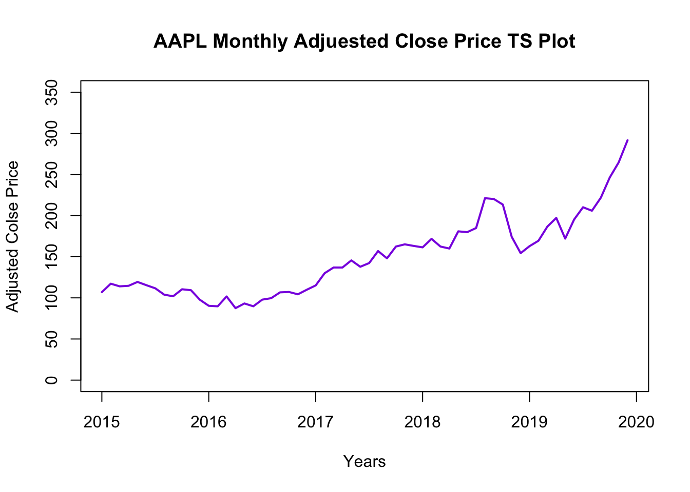
Then we plot the time-series of data with mean.
#plot the time-series of data with mean
plot(adj.close,main="AAPL Monthly Adjusted Close Price TS Plot",
xlab="Years", col = "blueviolet", lwd = 2)
#add the mean line
abline(h = mean(adj.close), col='red',lty=2)
#add the legend to the plot
legend("topleft", inset = 0.05, legend=c("AAPL", "Mean"),
col = c("blueviolet", "red"), cex = 0.8, lty=1:2)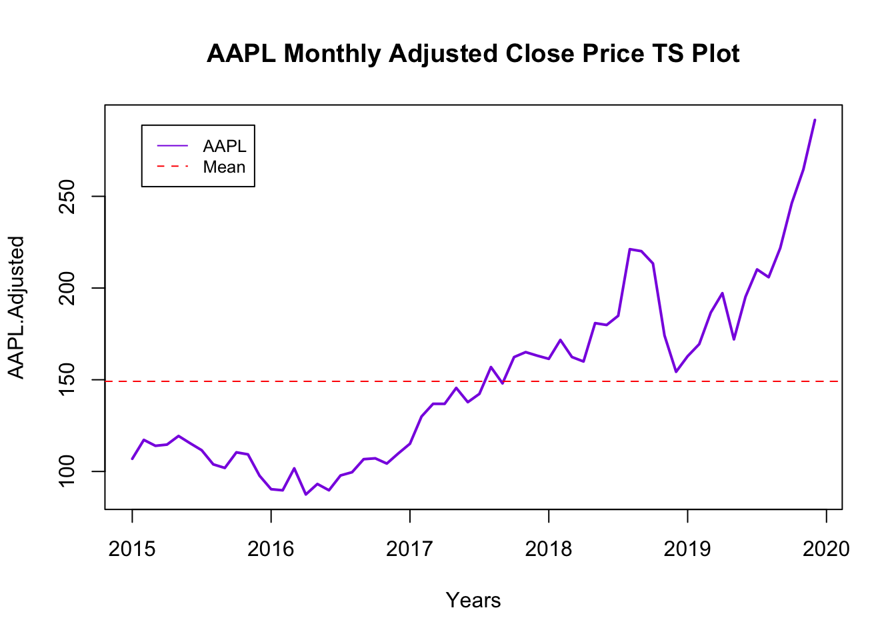
The graph shows the time series has an upward trend and does not have mean-reversion. The data do not have constant mean and stable variance, which suggest that the data are not covariance stationary.
We will plot ACF and PACF of AAPL Monthly Adjusted Close Prices.
#plot the ACF of data
acf(AAPL$AAPL.Adjusted, main = "ACF of AAPL Monthly Adjusted Close Price",
lag.max = 25)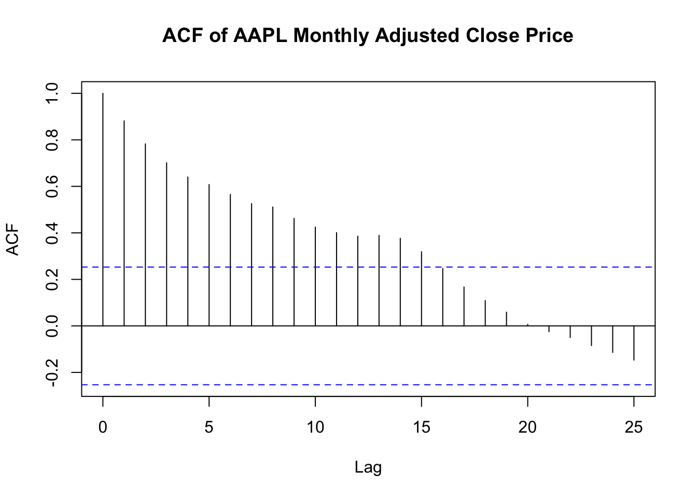
#plot the PACF of data
pacf(AAPL$AAPL.Adjusted, main = "PACF of AAPL Monthly Adjusted Close Price",
lag.max = 25)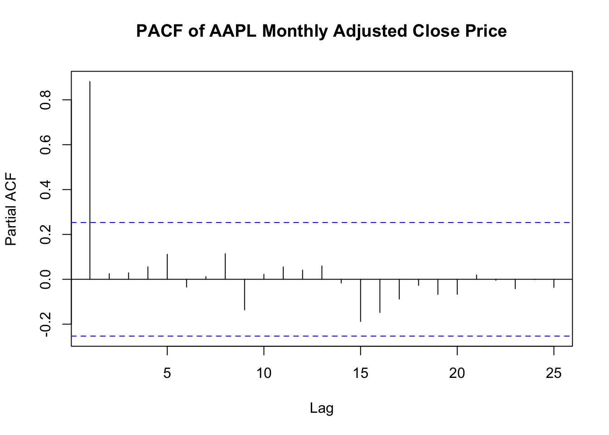
We find that in the ACF of the AAPL monthly adjusted close price, there exists a decay in the autocorrelation function, indicating non-stationarity of the data. Since the first 16 lags in ACF are beyond the range(the blue dash line), then these lags are significant, which means that the AAPL monthly adjusted close prices are correlated for the first 16 lags. For PACF, there exists a decay and a large spike of the first lag in the partial autocorrelation function.
We fit a linear and non-linear model to the AAPL daily adjusted close price time series.
First, we fit a linear model to the series.
# Linear Fit
# create an object to store time variable
t = seq(2015, 2020,length=length(adj.close))
# construct linear fit of the data
m1 = lm(adj.close ~ t)
# plot the original time series
plot(adj.close, ylab = "AAPL Monthly Adj.Close Price", xlab="Time",
lwd=2, col='skyblue3', xlim=c(2015, 2020),
main = "AAPL Adj.Close and Linear Fit")
# add the fit values of the linear model
lines(t,m1$fit, col="red3", lwd=2)
#add the legend to the plot
legend("topleft", inset = 0.05, legend=c("AAPL Adj.Close", "Linear Fit"),
col = c("skyblue3", "red"), cex = 0.8, lty=1:1)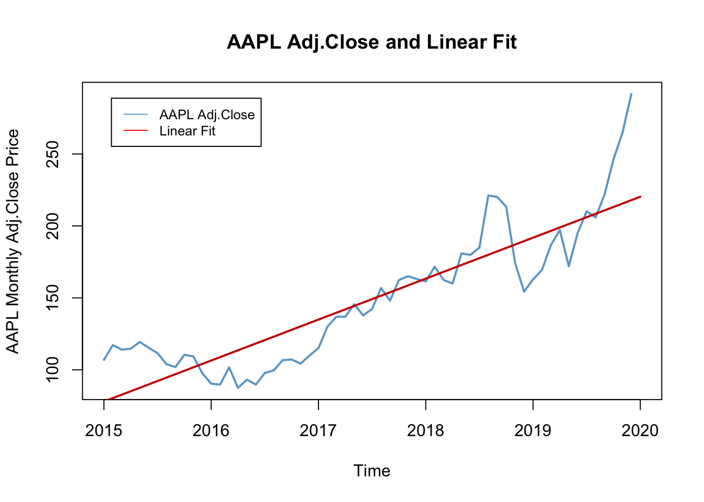
Second, we fit a non-linear model to the series.
# Non-Linear Fit
# construct non-linear fit of the data
m2 = lm(adj.close ~ sin((3/4)*pi*t) + t + I(t^2))
# plot the original time series
plot(adj.close,ylab = "AAPL Monthly Adj.Close Price",
xlab="Time", lwd=2, col='skyblue3', xlim=c(2015, 2020),
main = "AAPL Adj.Close and Non-linear Fit")
# add the fit values of the non-linear model
lines(t,m2$fit,col="red3",lwd=2)
#add the legend to the plot
legend("topleft", inset = 0.05, legend=c("AAPL Adj.Close", "Non-linear Fit"),
col = c("skyblue3", "red"), cex = 0.8, lty=1:1)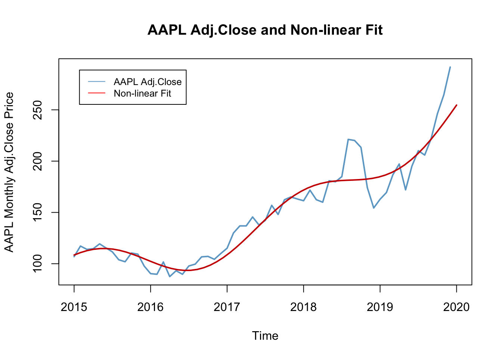
First, plot the residuals and fitted values of the linear model.
#plot the residuals and fitted values of the non-linear model
plot(m1, 1, pch = 20)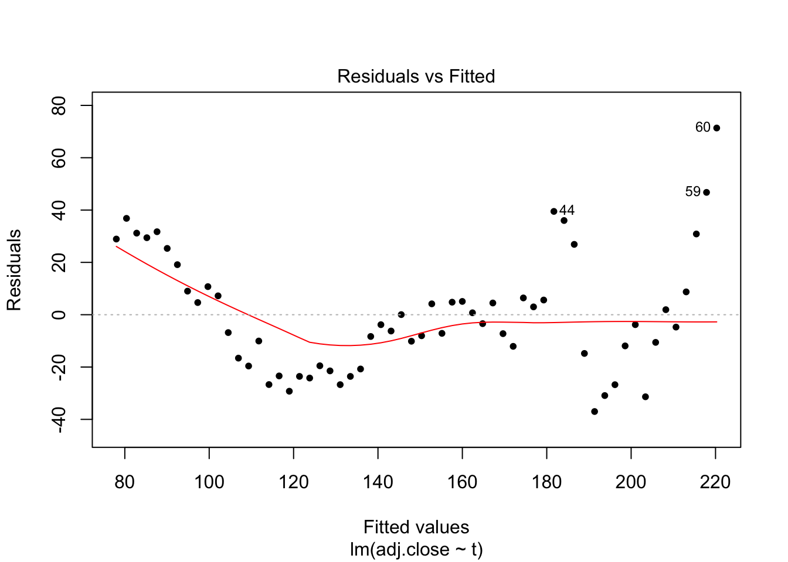
From the Residual vs Fitted plot, the range of residuals is large. There exists a pattern: curve up and curve down. However, there are several outliers like dot 59 and 60 in the graph. Therefore, the linear model for the AAPL daily adjusted close price is not appropriate.
Second, plot the residuals and fitted values of the non-linear model.
#plot the residuals and fitted values of the non-linear model
plot(m2, 1, pch = 20)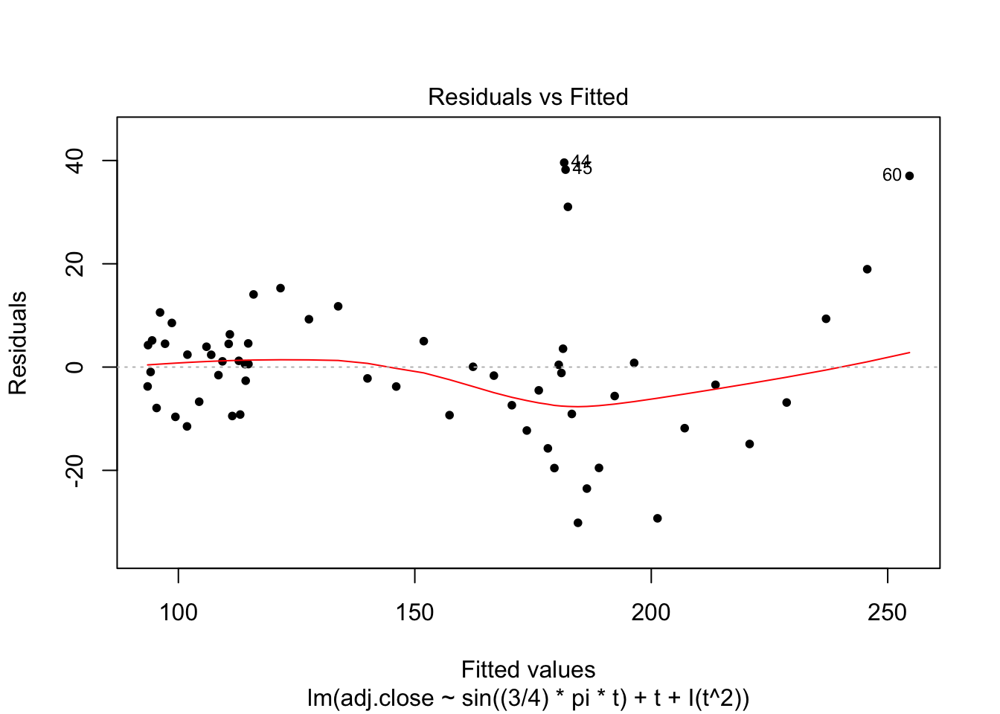
From the Residual vs Fitted plot, we can see that linearity seems to hold reasonably well, as the red line is close to the dashed zero line. The residuals bounce randomly around the 0 and there is non-linear relationship between fitted values and residuals, suggesting that this model is reasonable. The residuals of the log-linear model is more stable and much smaller compared to the residual plot of the linear model. Also, the range of residuals of this model is smaller than the range of residuals of the linear model. However, there are several outliers like dot 44 and 45 in the graph. Compared to the above model, the non-linear model is better and more appropriate.
For each model, we plot a histogram of the residuals and discuss your observations.
First, we plot a histogram of the residuals of the linear model.
#checkresiduals() produces a time plot, ACF plot and histogram of the residuals
checkresiduals(m1)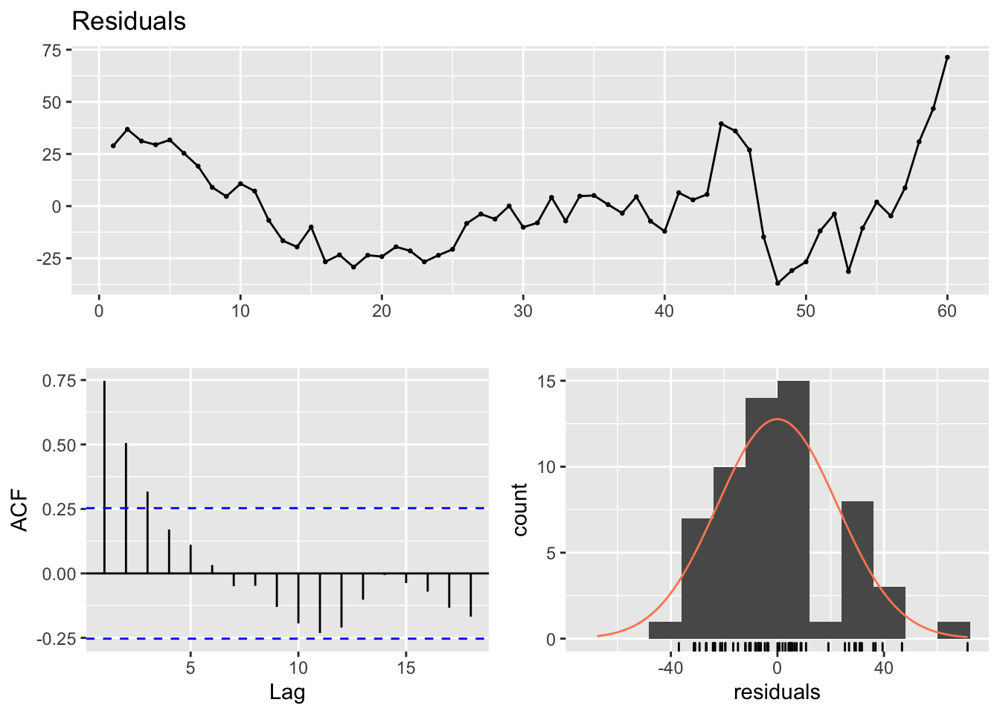
##
## Breusch-Godfrey test for serial correlation of order up to 10
##
## data: Residuals
## LM test = 43.412, df = 10, p-value = 4.196e-06From a time plot of residuals(top), we can see that residuals do not exhibit mean-reversion. The histogram of residuals of the linear model(bottom right) has a long right tail (right-skewwed), which suggests that the residuals of the linear model are not normally distrubuted. From the ACF of residuals(bottom left), there exists an significant correlation in the first three lags in the residuals series.
Second, we plot a histogram of the residuals of the log-linear model.
#checkresiduals() produces a time plot, ACF plot and histogram of the residuals
checkresiduals(m2)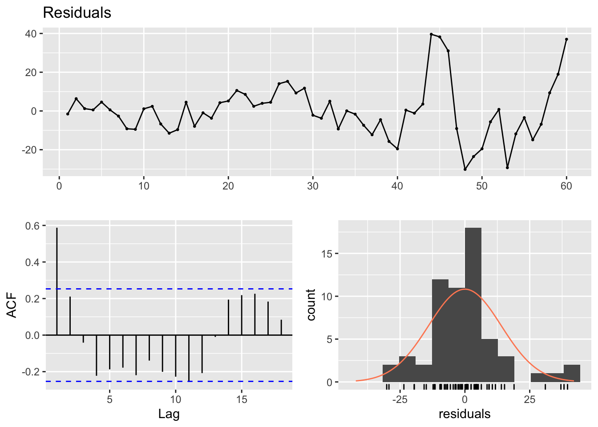
##
## Breusch-Godfrey test for serial correlation of order up to 10
##
## data: Residuals
## LM test = 32.103, df = 10, p-value = 0.0003849From a time plot of residuals (top), the range of residuals is much smaller and more close to zero compared to residuals of the linear model. From the ACF of residuals(bottom left), there exists an significant correlation at lag1 in the residuals series and the rest of the lags are within the range (blue dash line). The histogram of residuals of the non-linear model (bottom right) has a long right tail. Compared to the residuals of the linear model, the residuals of the non-linear model appear more normal.
For each model, we will discuss the associated diagnostics tatistics.
#diagnostic statistics
summary(m1)##
## Call:
## lm(formula = adj.close ~ t)
##
## Residuals:
## Min 1Q Median 3Q Max
## -36.999 -17.323 -3.804 8.797 71.359
##
## Coefficients:
## Estimate Std. Error t value Pr(>|t|)
## (Intercept) -57264.867 4040.239 -14.17 <2e-16 ***
## t 28.458 2.003 14.21 <2e-16 ***
## ---
## Signif. codes: 0 '***' 0.001 '**' 0.01 '*' 0.05 '.' 0.1 ' ' 1
##
## Residual standard error: 22.77 on 58 degrees of freedom
## Multiple R-squared: 0.7769, Adjusted R-squared: 0.773
## F-statistic: 201.9 on 1 and 58 DF, p-value: < 2.2e-16Since \(R^2\) is 0.7769, this indicates that 77.69% of AAPL adjusted close price can be explained by this linear model. Given \(\alpha\) = 0.05, since t-value is 14.21 that is greater than 1.96, we see that the time variable is statistically significant. Since there is only 1 variable, then F distribution and t distribution are the same. Also, since all p-values are less than the 0.05 threshold, then we can conclude our model is indeed statistically significant.
#diagnostic statistics
summary(m2)##
## Call:
## lm(formula = adj.close ~ sin((3/4) * pi * t) + t + I(t^2))
##
## Residuals:
## Min 1Q Median 3Q Max
## -30.158 -8.212 -0.446 4.690 39.590
##
## Coefficients:
## Estimate Std. Error t value Pr(>|t|)
## (Intercept) 2.535e+07 3.931e+06 6.449 2.81e-08 ***
## sin((3/4) * pi * t) -1.836e+01 2.792e+00 -6.577 1.73e-08 ***
## t -2.516e+04 3.897e+03 -6.457 2.72e-08 ***
## I(t^2) 6.244e+00 9.658e-01 6.465 2.64e-08 ***
## ---
## Signif. codes: 0 '***' 0.001 '**' 0.01 '*' 0.05 '.' 0.1 ' ' 1
##
## Residual standard error: 14.39 on 56 degrees of freedom
## Multiple R-squared: 0.9139, Adjusted R-squared: 0.9093
## F-statistic: 198.2 on 3 and 56 DF, p-value: < 2.2e-16Since R-squared is 0.9139 and it means that 91.39% of AAPL adjusted close price can be explained by this non-linear model, which shows the adjusted close price is better explained by the non-linear model. Given \(\alpha\) = 5% level, since the absolute values of all t-value are greater than 1.96, we see that the \(sin((3/4) \pi t)\), t and \(t^2\) are statistically significant. Also, since all p-values are less than the 0.05 threshold, then we can conclude our model is indeed statistically significant. For F-distribution, since the F-statistic (198.2) is greater than F critical value, which is approximately 3.162 and the p-value of F-statistic is less than 0.05, the data provide sufficient evidence to conclude that the non-linear model fits the data better than the model with no independent variables. So, variables \(sin((3/4) \pi t)\), t and \(t^2\) are statistically significant.
Now, we take a look at AIC and BIC to select appropriate model
#model selection
AIC(m1,m2)## df AIC
## m1 3 549.2709
## m2 5 496.1297BIC(m1, m2)## df BIC
## m1 3 555.5539
## m2 5 506.6014From the tables above, since values of both AIC and BIC of the log-linear model are much smaller than those of the linear model, then both AIC and BIC select the non-linear fit as the preferred model. Therefore, the seleted models agree.
We forecast AAPL daily adjusted close price for next 25 steps. We forecast 25-steps ahead at 95% confidence level and h is in months.
#create a time varaible
tn = data.frame(t = seq(from = 2020.000, to = 2022.000, by = 2/24))
#uncertainty prediction interval at 95% CI
pred.plim = predict((m2), tn,
level =0.95, interval="prediction")
#confidence interval at 95% CI
pred.clim = predict((m2), tn,
level=0.95, interval="confidence")
#set an outside margin
#xpd = TRUE tells R that it is OK to plot outside the region
par(mar = c(bottom = 5.1, left = 4.1, top = 3, right = 6), xpd=TRUE)
#forecast plot with uncertainty prediction interval
matplot(tn$t,cbind(pred.clim, pred.plim[,-1]),
lty=c(1,1,1,3,3), type="l", lwd=2,
ylab="Predicted AAPL Adj.Closed Price",
col = c("blue", "red", "skyblue3", "blueviolet", "green3"),
xlab="Time")
#add the legend to the plot
# horiz = FALSE tells R that I need a vertical legend
# bty = "n" means no outside box for the legend
#UB stands for upper bound, LB stands for lower bound
#PI stands for prediction interval
#CI stands for confidence interval
legend("topright", c("95% PI(UB)", "95% CI(UB)", "Fit Model",
"95% CI(LB)", "95% PI(LB)"),
horiz = FALSE, inset=c(-0.26,0), bty = "n",
col = c("green3", "skyblue3", "blue", "red", "blueviolet"),
lty=c(3,1,1,1,3), cex = 0.8, title = "Forecast")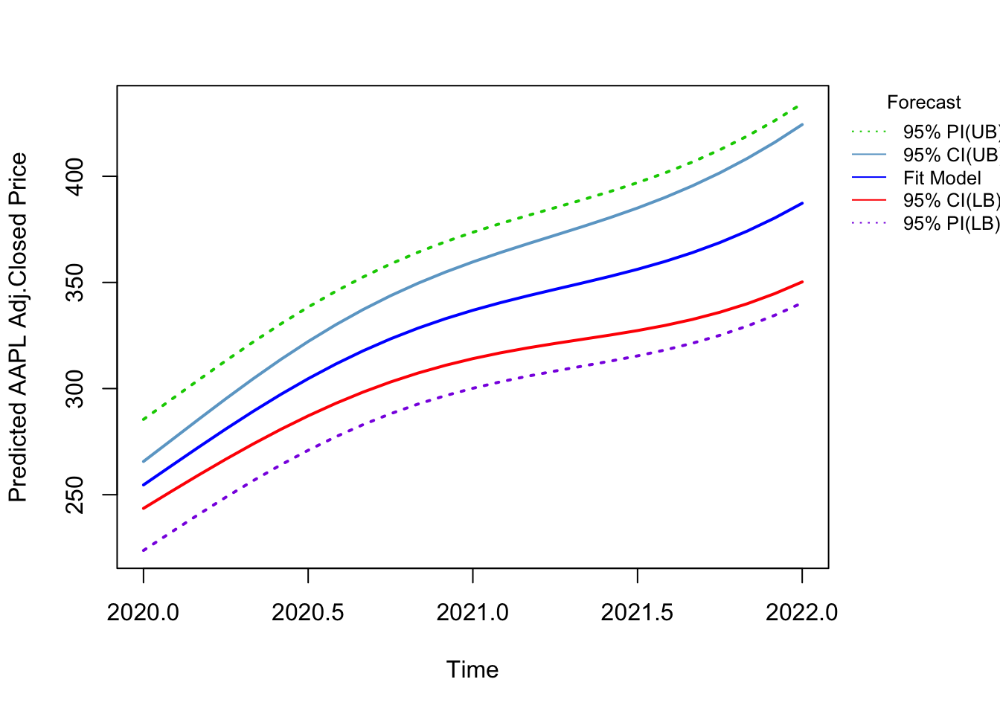
Note that PI denotes Prediction Interval and CI denotes Confidence Interval.
Construct and test (by looking at the diagnostic statistics) a model with a full set of seasonal dummies.
# Construct a model with a full set of seasonal dummies
fit1 = tslm(adj.close ~ season)
# plot the seasonal model
plot(adj.close, main="Time Series Data: Seasonality",
col = "royalblue", lwd=2)
#add a fitted values line
lines(fit1$fitted.values, col="red", lwd=2)
#add the legend to the plot
legend("topleft", inset = 0.05,
legend=c("AAPL Monthly Data", "Seasonal Model"),
col = c("royalblue", "red"), cex = 0.8, lty=1:1)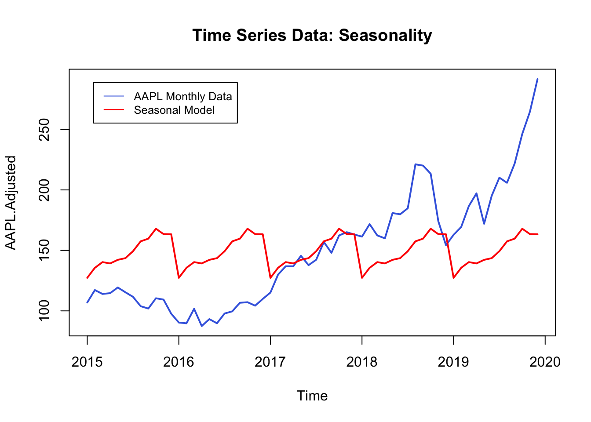
Now, we plot the estimated seasonal factors.
#Plot the estimated seasonal factors
plot(fit1$coef,type='l',ylab='Seasonal Factors', xlab="Season",
lwd=2, main="Plot of Seasonal Factors")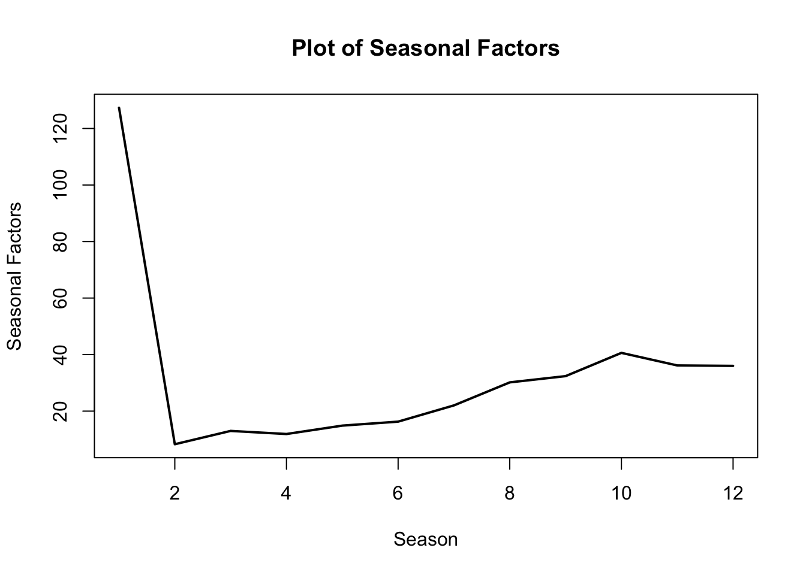
Clealy, there exists low seasonal effects in Feburary. There is a peak in October and a deline in November and December. There exists an increasing trend in seasonal factors effects.
To improve our model, we add the trend model to the seasonal model.
#construct a model with trend and season
fit2 <- tslm(adj.close ~ season + sin((3/4)*pi*time(adj.close)) +
time(adj.close) + I(time(adj.close)^2))
#plot the trending and seasona; model
plot(adj.close ,main="AAPL Monthly Adj. Close Price Full Model",
col = "royalblue", lwd=2)
#add a fitted values line
lines(fit2$fitted.values, col="red", lwd=2)
#add the legend to the plot
legend("topleft", inset = 0.05, col = c("royalblue", "red"),
legend=c("AAPL Monthly Data", "Full Model"), cex = 0.8, lty=1:1)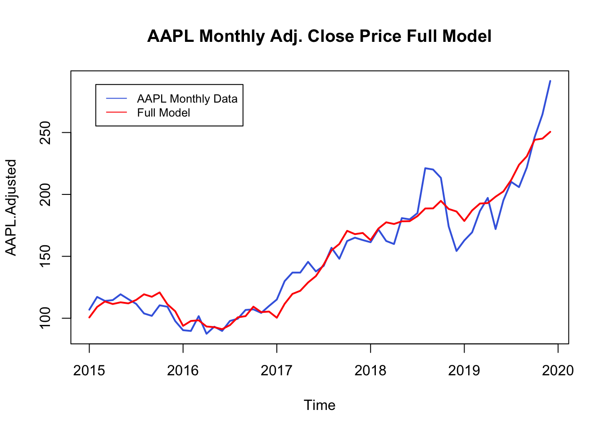
For the full model, we plot the respective residuals vs. fitted values.
# combine fitted values and residuals columns into one data frame
fit2_new <- as.data.frame(cbind(Fitted = fitted(fit2),
Residuals = residuals(fit2)))
#plot the respective residuals vs. fitted values
plot(fit2_new, main = "Residuals vs Fitted Values",
pch = 16, col = "darkorange1", xlab = "Fitted", ylab = "Residuals")
#add a mean line
abline(h = 0, lty = 2)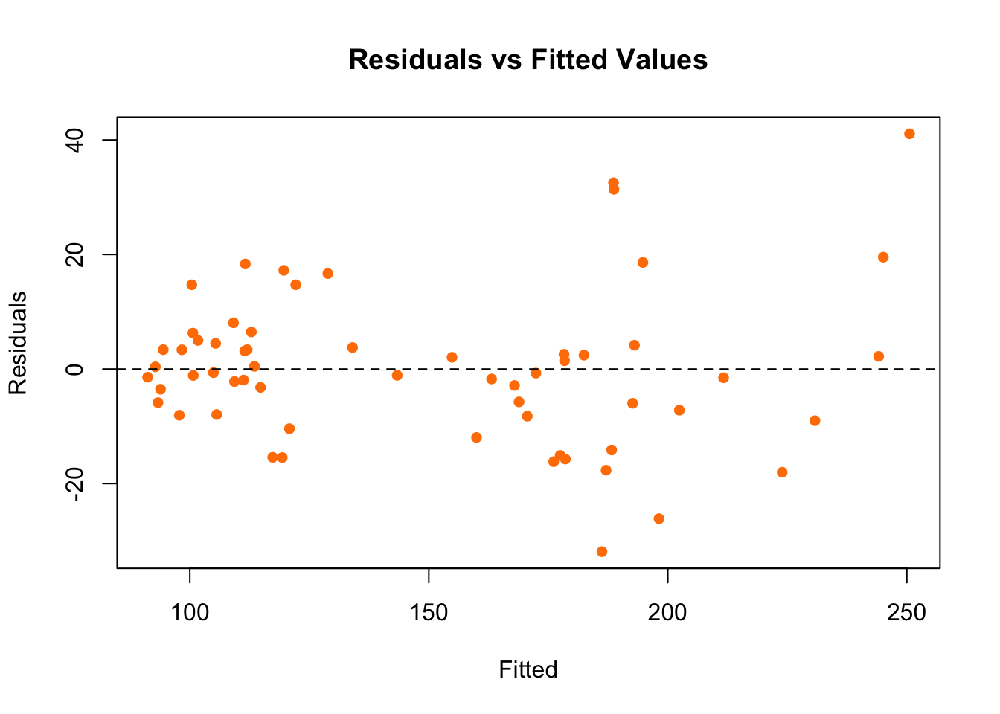
There are several outliers in the plot. There does not exist clear pattern. The residuals bounce randomly around 0 and there is non-linear relationship between fitted values and residuals, suggesting that this model is appropriate.
We interpret the respective summary statistics including the error metrics of the full model.
#show the summary statistics of the full model
summary(fit2)##
## Call:
## tslm(formula = adj.close ~ season + sin((3/4) * pi * time(adj.close)) +
## time(adj.close) + I(time(adj.close)^2))
##
## Residuals:
## Min 1Q Median 3Q Max
## -31.884 -7.972 -0.897 4.243 41.074
##
## Coefficients:
## Estimate Std. Error t value Pr(>|t|)
## (Intercept) 2.704e+07 4.330e+06 6.244 1.35e-07
## season2 6.313e+00 9.697e+00 0.651 0.5183
## season3 8.999e+00 9.700e+00 0.928 0.3585
## season4 5.800e+00 9.704e+00 0.598 0.5530
## season5 6.587e+00 9.709e+00 0.678 0.5010
## season6 5.718e+00 9.716e+00 0.588 0.5591
## season7 9.086e+00 9.724e+00 0.934 0.3551
## season8 1.473e+01 9.732e+00 1.514 0.1370
## season9 1.433e+01 9.742e+00 1.471 0.1482
## season10 1.981e+01 9.754e+00 2.031 0.0482
## season11 1.247e+01 9.766e+00 1.277 0.2080
## season12 9.286e+00 9.781e+00 0.949 0.3475
## sin((3/4) * pi * time(adj.close)) -1.775e+01 2.961e+00 -5.995 3.18e-07
## time(adj.close) -2.684e+04 4.293e+03 -6.252 1.32e-07
## I(time(adj.close)^2) 6.659e+00 1.064e+00 6.259 1.29e-07
##
## (Intercept) ***
## season2
## season3
## season4
## season5
## season6
## season7
## season8
## season9
## season10 *
## season11
## season12
## sin((3/4) * pi * time(adj.close)) ***
## time(adj.close) ***
## I(time(adj.close)^2) ***
## ---
## Signif. codes: 0 '***' 0.001 '**' 0.01 '*' 0.05 '.' 0.1 ' ' 1
##
## Residual standard error: 15.33 on 45 degrees of freedom
## Multiple R-squared: 0.9215, Adjusted R-squared: 0.8971
## F-statistic: 37.73 on 14 and 45 DF, p-value: < 2.2e-16Since \(R^2\) is 0.9215, which means that 92.15% of the original data can be explained by the full model. Compared to the non-linear model in problem 1, the full model explains the AAPL monthly adjusted close prices better. Since the F critical value is 1.92, which is less than F-statistic(37.73), this implies there are at least one coefficient of the full model is not equal to zero. From the table, since p-values of coefficients of season10, \(sin((3/4) \pi\cdot time(adj.close))\), \(time(adj.close)\) and \(I(time(adj.close)^2)\) are less than the 0.05 threshold, then they are statistcally significant.
Now, we analyze the error metrics of our full model.
#produce the error metrics of the full model and compare with the non-linear model
accuracy(fit2)## ME RMSE MAE MPE MAPE MASE
## Training set -1.184411e-15 13.27659 9.598611 -0.498908 6.222146 0.2888429
## ACF1
## Training set 0.5616792accuracy(m2)## ME RMSE MAE MPE MAPE MASE
## Training set -1.184411e-15 13.90352 9.835545 -0.5323762 6.273262 0.2501157ME(Mean Error) and MASE(Mean absolute scaled error) of the full model are larger than those of the non-linear model. All error metrics except for ME and MASE of the full model are lower than those of the non-linear model, indicating that the full model performs better.
Then we compare mean sqaured error with the non-linear model in problem 1 and the final model.
#install packages containing mse function
library(mltools)##
## Attaching package: 'mltools'## The following object is masked from 'package:PerformanceAnalytics':
##
## skewness## The following object is masked from 'package:timeDate':
##
## skewnessmse(preds = fit2$fitted.values, actuals = adj.close)## [1] 176.2679mse(preds = m2$fitted.values, actuals = adj.close)## [1] 193.3079Mean squared error for the final model is 177.8631, which is smaller than the mean sqaured error for non-linear model. Therefore, the final model is better.
We forecast AAPL monthly adjusted close price for next 25 steps. We forecast 25-steps ahead at 95% confidence level and h is in months.
#uncertainty prediction interval at 95% CI
pred.plim2 = predict((fit2), tn,
level =0.95, interval="prediction")## Warning: 'newdata' had 25 rows but variables found have 60 rows#confidence interval at 95% CI
pred.clim2 = predict((fit2), tn,
level=0.95, interval="confidence")## Warning: 'newdata' had 25 rows but variables found have 60 rowspred.plim3 <- pred.plim2[,-1]
#
est_int <- cbind(pred.clim2[1:25, ], pred.plim3[1:25, ])
#set an outside margin
#xpd = TRUE tells R that it is OK to plot outside the region
par(mar = c(bottom = 5.1, left = 4.1, top = 3, right = 6), xpd=TRUE)
#forecast plot with uncertainty prediction interval
matplot(tn$t, est_int,
lty=c(1,1,1,3,3), type="l", lwd=2,
ylab="Predicted AAPL Adj.Closed Price",
col = c("blue", "red", "skyblue3", "blueviolet", "green3"),
xlab="Time", xlim = c(2020, 2022), ylim = c(50, 160))
#add the legend to the plot
# horiz = FALSE tells R that I need a vertical legend
# bty = "n" means no outside box for the legend
#UB stands for upper bound, LB stands for lower bound
#PI stands for prediction interval
#CI stands for confidence interval
legend("topright", c("95% PI(UB)", "95% CI(UB)", "Fit Model",
"95% CI(LB)", "95% PI(LB)"),
horiz = FALSE, inset=c(-0.26,0), bty = "n",
col = c("green3", "skyblue3", "blue", "red", "blueviolet"),
lty=c(3,1,1,1,3), cex = 0.8, title = "Forecast")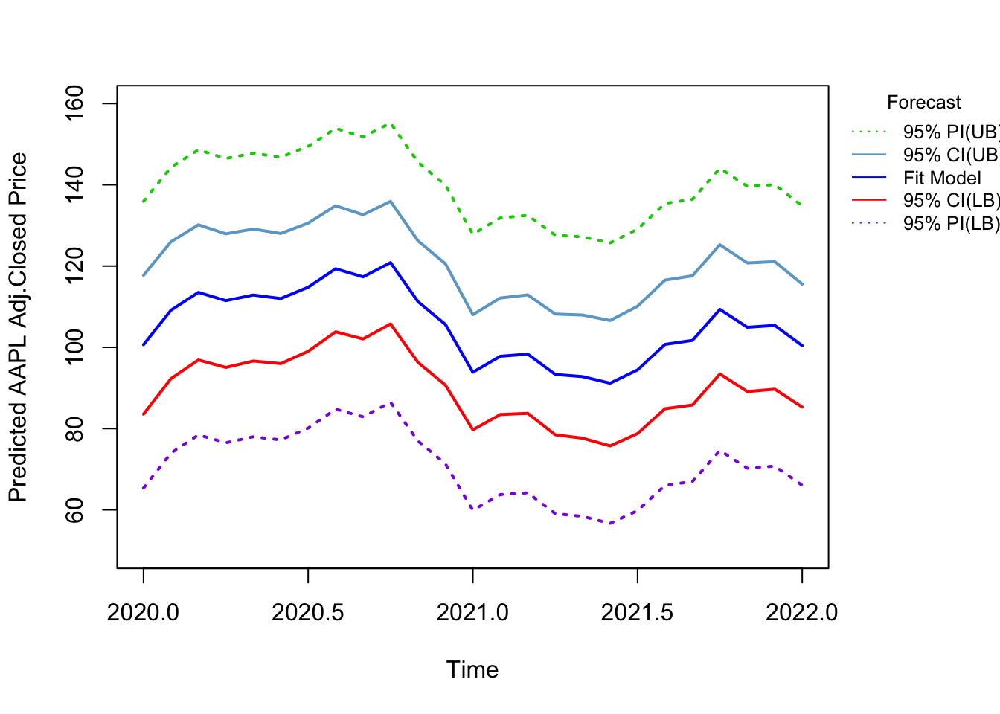
In this project, we used four different models to fit our data, and as the result shows, our final model explained our data better than the other models. We successfully forecast the trend and the seasonality of the data. However, there are something we could improve in this model. We found that the model well-fitted in the beginning of the data, and at the end the of 2018, there are some outliers. Also at the end of the 2019, the data has a significant increase. This deviate our model from the data. In the future, we believe maybe the model could improved by adding the exponential term in the trend, that will give a better trend of the model, and for the seasonality we notice there is only one significant seasonal dummy. Which indicate that for the future, we can work more on the seasonality of the model.
George Athanasopoulos, Rob J Hyndman. (2018). Forecasting principles and practice (2nd ed., pp.69-93). Monash University, Australia.